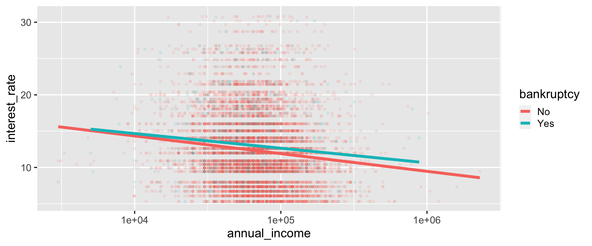

bir eğitimcinin perspektifinden tidyverse
mine çetinkaya-rundel
introduction
bu projeye katkıda bulunanlar
- Johanna Hardin, Pomona College
- Benjamin S. Baumer, Smith College
- Amelia McNamara, University of St Thomas
- Nicholas J. Horton, Amherst College
- Colin W. Rundel, Duke University
varsayımlar

varsayım 1:
Otantik araçları öğretmeliyiz
varsayım 2:
Otantik araç olarak R öğretelim
akılda kalması gereken
tidyverse, tüm seviyelerdeki lisans öğrencileri için veri bilimi döngüsü boyunca ihtiyaç duyulan bilişimsel becerilerini ve düşünmeyi kazanmaları için etkili ve verimli bir yol sağlar.
tidyverse ilkeleri
tidyverse
- çağrıldığında sekiz çekirdek paketi yükleyen ve ayrıca kurulum sırasında çok sayıda başka paketi bir araya getiren meta R paketi
- tidyverse paketleri bir tasarım felsefesini, ortak dil bilgisini, ve veri yapılarını paylaşır


örneklerde kullanılacak veri
data: Bir peer-to-peer lending platformu olan Lending Club’dan binlerce kredi ile ilgili veri, openintro paketinden, birkaç değişiklikle
library(tidyverse)
library(openintro)
loans <- loans_full_schema %>%
mutate(
homeownership = str_to_title(homeownership),
bankruptcy = if_else(public_record_bankrupt >= 1, "Yes", "No")
) %>%
filter(annual_income >= 10) %>%
select(
loan_amount, homeownership, bankruptcy,
application_type, annual_income, interest_rate
)loans
Rows: 9,976
Columns: 6
$ loan_amount <int> 28000, 5000, 2000, 21600, 23000, 5000, 24000, 20000, …
$ homeownership <chr> "Mortgage", "Rent", "Rent", "Rent", "Rent", "Own", "M…
$ bankruptcy <chr> "No", "Yes", "No", "No", "No", "No", "No", "No", "No"…
$ application_type <fct> individual, individual, individual, individual, joint…
$ annual_income <dbl> 90000, 40000, 40000, 30000, 35000, 34000, 35000, 1100…
$ interest_rate <dbl> 14.07, 12.61, 17.09, 6.72, 14.07, 6.72, 13.59, 11.99,…tidyverse ile R eğitimi
hedef: gruplandırılmış özetleme
Başvuranların ev sahipliği durumuna göre, ortalama kredi tutarını ve başvuran sayısını hesaplayın. Sonuçları azalan ortalama kredi tutarına göre görüntüleyin.
| Homeownership | Number of applicants | Average loan amount |
|---|---|---|
| Mortgage | $18,132 | 4,778 |
| Own | $15,665 | 1,350 |
| Rent | $14,396 | 3,848 |
adım adım I
Başvuranların ev sahipliği durumuna göre, ortalama kredi tutarını ve başvuran sayısını hesaplayın. Sonuçları azalan ortalama kredi tutarına göre görüntüleyin.
# A tibble: 9,976 × 6
loan_amount homeownership bankruptcy application_type annual_income
<int> <chr> <chr> <fct> <dbl>
1 28000 Mortgage No individual 90000
2 5000 Rent Yes individual 40000
3 2000 Rent No individual 40000
4 21600 Rent No individual 30000
5 23000 Rent No joint 35000
6 5000 Own No individual 34000
# … with 9,970 more rows, and 1 more variable: interest_rate <dbl>adım adım II
Başvuranların ev sahipliği durumuna göre, ortalama kredi tutarını ve başvuran sayısını hesaplayın. Sonuçları azalan ortalama kredi tutarına göre görüntüleyin.
[input] veri çerçevesi
# A tibble: 9,976 × 6
# Groups: homeownership [3]
loan_amount homeownership bankruptcy application_type annual_income
<int> <chr> <chr> <fct> <dbl>
1 28000 Mortgage No individual 90000
2 5000 Rent Yes individual 40000
3 2000 Rent No individual 40000
4 21600 Rent No individual 30000
5 23000 Rent No joint 35000
6 5000 Own No individual 34000
# … with 9,970 more rows, and 1 more variable: interest_rate <dbl>veri çerçevesi [output]
adım adım III
Başvuranların ev sahipliği durumuna göre, ortalama kredi tutarını ve başvuran sayısını hesaplayın. Sonuçları azalan ortalama kredi tutarına göre görüntüleyin.
adım adım IV
Başvuranların ev sahipliği durumuna göre, ortalama kredi tutarını ve başvuran sayısını hesaplayın. Sonuçları azalan ortalama kredi tutarına göre görüntüleyin.
adım adım V
Başvuranların ev sahipliği durumuna göre, ortalama kredi tutarını ve başvuran sayısını hesaplayın. Sonuçları azalan ortalama kredi tutarına göre görüntüleyin.
hep beraber
[input] veri çerçevesi
loans %>%
group_by(homeownership) %>%
summarize(
avg_loan_amount = mean(loan_amount),
n_applicants = n()
) %>%
arrange(desc(avg_loan_amount))# A tibble: 3 × 3
homeownership avg_loan_amount n_applicants
<chr> <dbl> <int>
1 Mortgage 18132. 4778
2 Own 15665. 1350
3 Rent 14396. 3848[output] veri çerçevesi
alternatifler
aggregate()tapply()
aggregate() ile gruplandırılmış özet
aggregate() ile gruplandırılmış özet
aggregate() ile gruplandırılmış özet
- Good: Giren ve çıkan veri çerçevesi
- Not so good: Butun bunlari tanıtmak gerekiyor:
formül sözdizimi
fonksiyonları argüman olarak iletme
veri cercevelerini birleştirme
satırlara erişmek için köşeli parantez gösterimi
tapply() ile gruplandırılmış özet
Mortgage Own Rent
18132.45 15665.44 14396.44 Not so good:
- passing functions as arguments
- distinguishing between the various
apply()functions - ending up with a new data structure (
array) - reading nested functions
hedef: veri görselleştirme
Kredi tutarı ile başvuru türü arasındaki ilişkiyi ev sahipliğine göre gösteren yan yana kutu grafikleri oluşturun.

adım adım I
adım adım II

adım adım III
adım adım IV
adım adım IV
ggplot() ile görselleştirme
- Her katman geçerli bir görselleştirme üretir
- Üçüncü bir değişkenle facet oluşturma yalnızca bir yeni fonksiyon gerektirir
boxplot() ile görselleştirme
boxplot() ile görselleştirme
farklı bir ilişkiyi görselleştirmek
Faiz oranı ile yıllık gelir arasındaki ilişkiyi başvuranın iflasına bağlı olarak gözünüzde canlandırın.
ggplot() ile görselleştirme
ggplot() ile özelleştirme
ggplot(loans,
aes(y = interest_rate, x = annual_income,
color = bankruptcy)) +
geom_point(alpha = 0.1) +
geom_smooth(method = "lm", size = 2, se = FALSE) +
scale_x_log10(labels = scales::label_dollar()) +
scale_y_continuous(labels = scales::label_percent(scale = 1)) +
scale_color_OkabeIto() +
labs(x = "Annual Income", y = "Interest Rate",
color = "Previous\nBankruptcy") +
theme_minimal(base_size = 18)
plot() ile görselleştirme
# From the OkabeIto palette
cols = c(No = "#e6a003", Yes = "#57b4e9")
plot(
loans$annual_income,
loans$interest_rate,
pch = 16,
col = adjustcolor(cols[loans$bankruptcy], alpha.f = 0.1),
log = "x",
xlab = "Annual Income ($)",
ylab = "Interest Rate (%)",
xaxp = c(1000, 10000000, 1)
)
lm_b_no = lm(
interest_rate ~ log10(annual_income),
data = loans[loans$bankruptcy == "No",]
)
lm_b_yes = lm(
interest_rate ~ log10(annual_income),
data = loans[loans$bankruptcy == "Yes",]
)
abline(lm_b_no, col = cols["No"], lwd = 3)
abline(lm_b_yes, col = cols["Yes"], lwd = 3)
legend(
"topright",
legend = c("Yes", "No"),
title = "Previous\nBankruptcy",
col = cols[c("Yes", "No")],
pch = 16, lwd = 1
)plot() ile görselleştirme

modelleme
tidymodels ile modelleme ve istatistiki çıkarım:
çok çeşitli paketlerde bulunan modelleme işlevlerine yönelik birleşik bir arayüz
veri çerçevesi içeri / veri çerçevesi dışarı paradigmasına bağlı kalmak
metodoloji için korkuluklar
son düşünceler
tidyverse’ in pedagojik güçlü yönleri
- tutarlılık: öğrencilerin fonksiyon argümanları hakkındaki bilgileri uzun süreli hafızalarına taşımalarına izin verir
- bağdaşabilirlik: base R koduyla (ya da başka paketlerin kodlarıyla) bir arada kullanmamak mümkün değil!
- ölçeklenebilirlik: bir görselleştirmeye veya yeni bir özet istatistiğe yeni bir değişken eklemek, çok sayıda işlev, arabirim ve veri yapısının tanıtılmasını gerektirmez.
- kullanıcı merkezli tasarım: kullanıcı deneyimi (ve öğrenimi) düşünülerek tasarlanmış ve devamlı olarak geliştirilen arayüzler
- okunabilirlik: okunabilir kod üretmek için tasarlanmış arayüzler
- komünite + dokümentasyon: teşvik edici ve kapsayıcı komünite + kullanıcı dostu dokümentasyon
- paylaşılan sözdizimi: dplyr fiilleriyle SQL’i ücretsiz edinin!
müfredat oluşturmak
library(tidyverse)ile başlayinpaket paket değil, öğrenme hedeflerinin sırasına gore öğretin
tidyverse’i takip etmek
blog gönderileri, güncellemeleri, bunların arkasındaki mantık ve işe yarayan örneklerle birlikte vurgular
lifecycle stages (yaşam döngüsü aşamaları) ve rozetler

koda
Her birimiz R’i tidyverse oncesinde öğrendik ve senelerce tidyverse’siz R ogrettik. Daha sonra araştırmamızda ve öğretimimizde tidyverse’i kullanmaya karar verdik. Bu makale, tidyverse seçimimizi destekleyen nedenlerin yanı sıra, tidyverse ile istatistik öğretiminin faydalarının ve zorluklarının bir sentezidir.
teşekkürler!
bit.ly/tidyperspective-whyR-tr